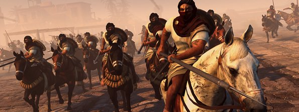
Total War: Attila - Empires Of Sand Expansion Coming Next Week
We’ve crept into the early stages of planning the Global Game Awards 2015, and I have to say it almost slipped my mind completely that Total War: Attila was even a thing. By all accounts it wasn’t much of an improvement, if any, over Rome II, but in the ensuing months Creative Assembly has been doing its best to load it up with more content and rebalance the game.The latest of these efforts is Total War Attila: Empires of Sand, adding three new playable factions from the Desert Kingdoms cultural group.
[More] 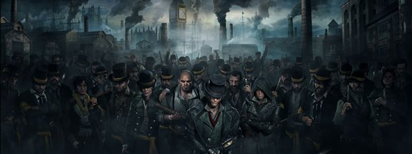
Ubisoft Announces Nov 19 Launch For Assassins Creed Syndicate PC And Explains Delay
Ubisoft has finally announced when Assassin’s Creed Syndicate will be coming to PC, announcing a November 19th release date. This is roughly a month after the PlayStation 4 and Xbox One versions, which arrive on October 23rd worldwide. It wasn’t so long ago that we expected the PC editions of Assassin’s Creed to arrive a little later, but Ubisoft tried a different tack last year with Unity, and we all know how that ended up. As you’d expect Ubisoft has its reasons for delaying the PC port of Assassin’s Creed Syndicate, which revolves around creating the most stable and optimised version of the game possible.
[More] 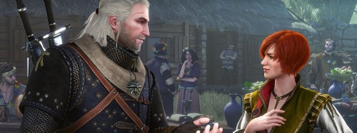
The Witcher 3: Hearts Of Stone Expansion Pack Trailer Revealed.
It’s not often that DLC is met with fervid anticipation, but CD Projekt RED has earned plenty of trust these last few months. The Polish developer has announced The Witcher 3: Wild Hunt - Hearts of Stone expansion will be coming to PC, PlayStation 4 and Xbox One on October 13th, offering up more than 10 hours of additional questing; including new characters, monsters, romance options and of course a new storyline taking players to the dark underbelly of Oxenfurt. Just to get us even more hyped for the Hearts of Stone DLC, CDPR has revealed a new teaser trailer for the expansion.
[More] 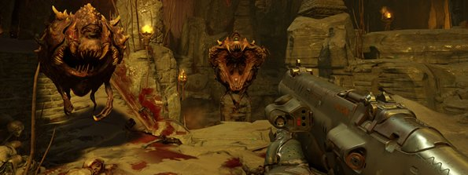
DOOM SnapMap Game Mode And Map Creation Tool Explained In New Trailer
One of the things that caught plenty of people’s eye from the DOOM unveiling back at E3 was the SnapMap mode. Designed from the ground up to be as simple as possible to use, SnapMap promises to allow any user to just slot together components and create a map. Bethesda reckon it can be as simple to use or as in-depth as the player wants, with some powerful results.A new trailer from Id and Bethesda explores Doom’s SnapMap mode, explaining why they have chosen it over traditional mod support and how the maps will be created. It’s not all about the creation side of things though; SnapMaps can be shared and the best creations will find a home in the content hub.
[More] 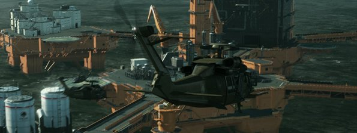
Metal Gear Solid V: The Phantom Pain PC 60 FPS Frame Rate Cap Fix.
Despite performing great and being extremely well optimised indeed, Metal Gear Solid V: The Phantom Pain comes with a frame rate cap on PC. Konami made the decision to limit the maximum frame rate to 60 frames per second, and up until now there was no workaround for PC gamers who wanted to unleash the full capabilities of their graphics cards.Now we've got hold of a pretty simple fix if you want to remove the frame rate cap in Metal Gear Solid 5 on PC, and all you’ve got to do is follow the simple instructions below. As a guide, it revolves around enabling Adaptive V-Sync, which overwrites MGS 5’s native V-Sync.
[More] Need For Speed 2015 Personalities And Race Types - The Complete Breakdown
Earlier this week, EA gave us a bit of a taster of the five different disciplines which will earn you reputation in Need For Speed. There's different ways to play - Speed, Style, Build, Crew, and Outlaw. What EA didn't touch on however was the racing superstars you would be doing all this with. Ghost Games originally announced at Gamescom in Cologne this year that a number of real-life street racing icons will be showing their faces in Need For Speed 2015. These are racers and racing icons from the top of their game, and each of them has a chosen speciality to correspond with the five different play styles.
[More] 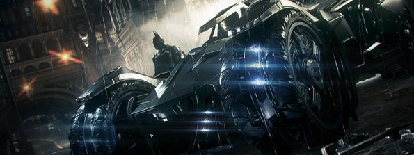
Batman: Arkham Knight PC Interim Update Is Finally Here.
After a false start yesterday, the Batman: Arkham Knight Interim update has finally managed to sneak out of Warner Bros HQ. Originally going live yesterday, WB Games swiftly whipped it down for reasons unknown, but now it’s available for all to download. The second Batman: Arkham Knight PC patch weighs in at a 626.2MB download.Some of the major chances included in the update are reduced framerate hitches, system memory and VRAM usage optimisations, improved performance across all graphics cards, more in-game graphics settings, and supposedly a fix for the low resolution texture bug which a number of Batman: Arkham Knight players were experiencing.
[More] 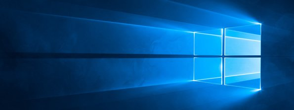
Windows 10 Already The Third Most Popular Operating System Among Steam Gamers
Windows 10 may have only been out for about five weeks now, but already Microsoft’s latest OS is the third most popular operating system used on Steam. The monthly Steam Hardware and Software Survey shows that for the month of August, more than 17% of Steam users are already using Windows 10.The 64-bit edition of Windows 10 is already just 7% behind the total number of Windows 8.1 users. Way, way out in front is still Windows 7 of course, with 39.71% using the 64-bit version. However, this means Windows 10 64-bit is already more popular than Windows 7 32-bit, Windows Vista, and Windows XP. All in all this makes for the most successful Windows launch in Microsoft’s history.
[More] 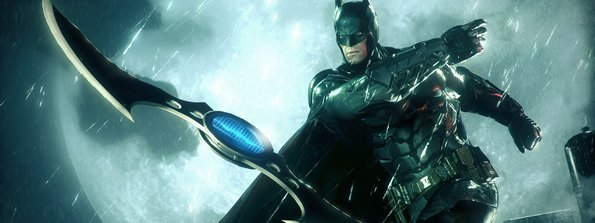
Batman: Arkham Knight Patch 2 Came And Went - Included New Graphics Options.
The second Batman: Arkham Knight patch surfaced last night. I know because I managed to grab it, but like the Caped Crusader himself, it disappeared into the darkness as Warner Bros appeared to roll back the update. My copy has since reverted back to the 1.01 version, but I had a brief look at what the patch has in store. To grab the update you had to agree to the Batman: Arkham Knight beta program, which subsequently made the patch available for download. It weighed in at around 660MB. Booting the game up there was a number of new graphics options to tinker with, including Chromatic Aberration, Film Grain, and the option to increase the Max FPS to 60fps and beyond.
[More] 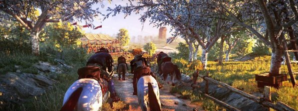
The Witcher 3 Hearts Of Stone Expansion Almost Ready - More Gwent To Come.
We haven’t heard a whisper about it from CD Projekt RED in the months since The Witcher 3’s launch, but the sprawling RPG’s first expansion is arriving very soon. CDPR has been busy pushing out the packed post-launch DLC schedule and now inevitably the attention turns to the first full-blown expansion pack. According to the studio’s Travis Currit, the expansion is “almost ready”, with an anticipated release date of October. The add-on in question is Hearts of Stone, an all-new adventure set once more in and around the hanging corpses and picturesque woodlands of Velen.
[More] 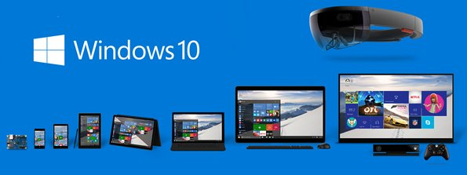
Microsoft Reports Windows 10 Has Been Installed On More Than 75 Million Machines
Microsoft has announced Windows 10 has unsurprisingly got off to a bit of a flyer. So far its new operating system has been installed on more that 75 million machines throughout 192 countries. That means 1 in 93 of the planet’s population has got hold of Windows 10 in the four weeks since its launch. The sky-high numbers were revealed by Microsoft’s corporate vice president for marketing, Yusuf Mehdi, who presented a series of impressive stats about its latest operating system. The 75 million figure takes into account PCs and tablets, with more than 90,000 unique hardware models making the jump to Windows 10.
[More] 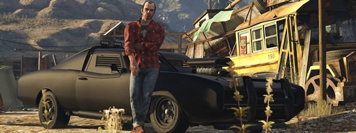
Grand Theft Auto 5 Will Not Be Getting A Single-Player DLC Expansion.
I guess it should’ve become pretty obvious in the two years since its launch, but Rockstar has finally confirmed that Grand Theft Auto 5 won’t be getting any single-player DLC. The enduring popularity of its Grand Theft Auto Online component has meant that the multiplayer is now Rockstar’s number one priority. Imran Sarwar, Rockstar North’s director of design, said that all of the primary developers that helped work on GTA 5 have been moved over to support GTA Online. If you’re hoping that at least means more Online Heists, you’re out of luck. It looks as if these have been put on the backburner entirely."Right now our focus is on GTA Online which has exceeded our expectations,” said Sarwar.
[More]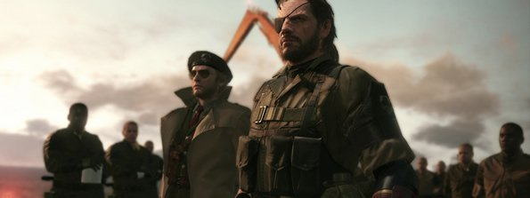
Epic Kojima-Directed Metal Gear Solid V: The Phantom Pain Launch Trailer Arrivesves
Okay, stop whatever you’re doing, Hideo Kojima’s final Metal Gear Solid V: The Phantom Pain trailer is here and it’s a beauty. The man’s indeniable talent for going from the sublime to the ridiculous is ably demonstrated by the heart-tugging opening three minutes, before seguing smoothly to a Metal Gear with a robot gun dick. Never change, Kojima. Never change. This launch trailer for MGS 5 is actually directed by Kojima himself, rather than the disappointing Gamescom trailer scraped together by Konami.
[More]